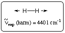
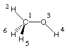
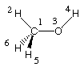

Selecting a Structure
One of the first conditions that must be satisfied in order to perform an accurate
calculation of vibrational frequencies is that the underlying molecular structure
represents a stationary point, that is, all first derivatives of the energy with
respect to nuclear coordinates must be essentially zero. Using the vibrational
frequency spectrum for the dihydrogen molecule (H-H) as an example, one can show
that small deviations from the equilibrium structure
can quickly lead to large errors
in the calculated vibrational frequencies. The experimentally measured fundamental
vibrational mode is located at 4160 cm-1. Expanding the vibrational frequencies
in a series containing harmonic and anharmonic terms, the corresponding (experimental) harmonic
frequency is 4401 cm-1. The following values are obtained at the HF/6-31G
level of theory using structures optimized to different accuracy:
|  |
|
| keywords | frequencies (cm-1) |
|---|---|
| freq=(numerical,step=100) scf=(conver=6) | -0.0001, -0.0001, 0.0001, 45.2207, 45.2207, 4341.5252 |
| freq=(numerical,step=50) scf=(conver=6) | -0.0001, 0.0001, 0.0001, 22.3738, 22.3738, 4341.2912 |
| freq=(numerical,step=10) scf=(conver=7) | -0.0001, -0.0001, -0.0001, 1.6958, 1.6958, 4341.2165 |
|  |
|  |
| method | scale factor | rms deviation (cm-1) |
|---|---|---|
| AM1 | 0.9532 | 126 |
| PM3 | 0.9761 | 159 |
| HF/6-31G(d) | 0.8953 | 50 |
| MP2(FC)/6-31G(d) | 0.9427 | 61 |
| QCISD(FC)/6-31G(d) | 0.9537 | 37 |
| BLYP/6-31G(d) | 0.9945 | 45 |
| B3LYP/6-31G(d) | 0.9614 | 34 |
last changes: 11.11.2004, HZ questions & comments to: zipse@cup.uni-muenchen.de